Moneda: Rupia india (INR) · ~65 rupias = 1 € aprox. · Vuelo: Austrian Airlines · BCN→VIE→DEL / DEL→VIE→BCN · Normas en templos: Descalzarse siempre · Las mujeres deben cubrir hombros y piernas · Propinas: Habitual para los cuidadores de zapatos en mezquitas y templos · Transporte local: Taxi o tuk-tuk para moverse por las ciudades · Agua: Beber siempre agua embotellada
Barcelona → Viena → Nueva Delhi
Vuelo VIE → DEL: Austrian Airlines · Salida 13:15h · Llegada 00:05h (día siguiente)
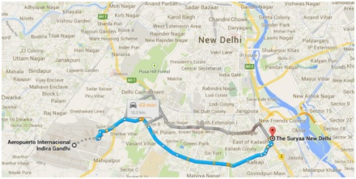
The Suryaa New Delhi
Nueva Delhi · Alojamiento durante los días en Delhi
Nueva Delhi — Mezquitas, monumentos y templos
Jama Masjid — La mayor mezquita de la India
Situada sobre un promontorio que permite observar toda la parte vieja de la ciudad. Construida en 1656 por Shah Jahan: 6 años de obras y más de 5.000 obreros. Destacan sus tres grandes entradas, dos minaretes de 40 m de altura y las hileras alternas de mármol blanco y arenisca roja. Su patio tiene cabida para 25.000 fieles. Normas: descalzarse y las mujeres deben cubrir hombros y piernas. Recomendable dejar propina a los cuidadores de zapatos.
Raj Ghat — Tumba de Gandhi
Lugar de peregrinación sencillo pero cargado de emotividad. Plataforma de mármol negro que señala el punto exacto donde fue incinerado Gandhi en 1948. Un sacerdote vela por las cenizas y mantiene viva una llama eterna. El recinto tiene un parque precioso y tranquilo donde aislarse del caos de Nueva Delhi.
India Gate + Raj Path
Gigantesca puerta de arenisca roja construida para rendir tributo a los soldados que murieron en la Primera Guerra Mundial, la provincia North-West Frontier, la tercera guerra afgana y la guerra indo-pakistaní de 1971. El ambiente que la rodea es fabuloso: un pequeño parque donde los habitantes se reúnen para jugar al ajedrez y a juegos tradicionales. Pasear por Raj Path al atardecer entre la Puerta de la India y el Rashtrapati Bhavan, mezclándose con los indios que vienen a pasear.
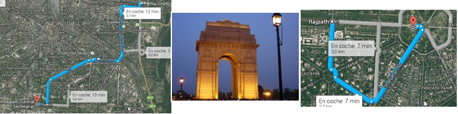
Qutb Minar — Complejo Qutb
Torre de 72,5 m de altura (14,3 m de diámetro en la base, 2,7 m en la cima). Construcción iniciada en 1193, terminada en 1368. Construida en ladrillos y mármol, forma parte del complejo Qutb, declarado Patrimonio de la Humanidad por la UNESCO en 1993. Considerada una de las más bellas muestras del arte islámico.
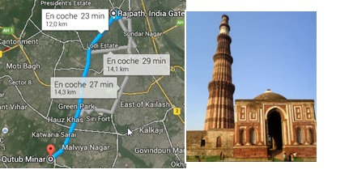
Templo de Birla — Birla Mandir
Uno de los primeros templos de la India abierto a todas las castas; Gandhi asistió a su primera puja. Entrada de mármol con shikharas (agujas) de color ocre y marrón. Interior con imágenes de Vishnu y Lakshmi en el altar mayor, pinturas del Mahabharata y Ramayana en los altares secundarios. Sala dedicada a Krishna con música relajante y cantos religiosos. Espacio de meditación disponible.
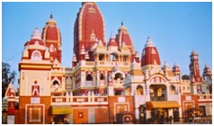
Templo Sikh — Gurudwara Bangla Sahib
Principal templo sikh de Delhi, cerca de Connaught Place. Todo construido en mármol, incluido el suelo. Complejo con cocina, estanque, escuela y galería de arte. Antiguo palacio del rajá Jai Singh (s. XVII) donde el Gurú Har Krishan ayudó a los afectados por una epidemia de cólera en 1664 con agua de su pozo — considerada hoy con propiedades curativas. Centro de peregrinación para sikhs e hindúes de todo el mundo.
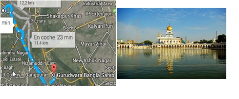
The Suryaa New Delhi
Regreso al hotel al final del día
Nueva Delhi → Benarés — Traslado
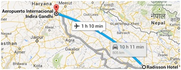
Radisson Hotel Varanasi
Benarés · Varanasi
Benarés — Ganges al amanecer · Templos de Khajuraho
Recorrido en barca por el Ganges — Ghats de Varanasi
Varanasi, también conocida como Kashi, es considerada la ciudad más antigua del mundo (más de 3.000 años de antigüedad). Centro cultural y espiritual de la India y una de las principales ciudades de peregrinación hindú. Los ghats principales van desde Raj Ghat en el norte hasta Assi Ghat al sur. Paseo por las callejuelas de la Ciudad Vieja tras el recorrido en barca.
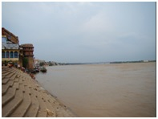
Templos de Khajuraho — Templo Visvanath y Grupo Occidental
El mayor conjunto de templos hinduistas de la India, famosos por sus esculturas eróticas. Capital religiosa de la dinastía Chandella (ss. X-XII). Los templos se construyeron entre el 950 y el 1050 d.C. Toda la zona ocupa 21 km² y está amurallada con ocho puertas flanqueadas por palmeras. De los 80 templos originales, 22 se conservan en buen estado. Al encontrarse lejos del Ganges, sobrevivieron a la destrucción mogol. Redescubiertos en 1838 por el capitán I. S. Burt. El nombre de la ciudad viene de Kajur (palmera datilera en hindi).
Hotel Taj Chandela
Khajuraho
Khajuraho → Orcha → Agra
A Agra: Carretera hasta Jhansi + tren rápido Shatbdi Express Jhansi–Agra (~2,5h)
Orcha — Palacio Real y Cenotafios del clan Bundela
Palacio construido por el tercer rajá Madhukar Shâh (1554-1578). Habitaciones pintadas con murales en los techos donde la realeza de Rama, Krishna y Orchha pelean, cazan, luchan y bailan. Cámaras reales conectadas por laberínticos pasillos con acceso a jardines de estilo mongol. En el patio central: restos de un baño alimentado por canales. Los balcones exteriores están decorados con filigranas de madera y esculturas de animales (elefantes destacados en las puertas). Raj Praveen Mahal: pabellón externo con baño turco de hermosos techos abovedados y vistas excepcionales al río Betwa. Destacan la calma total y los cánticos llamando a la oración.
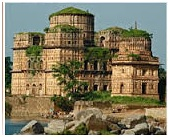
Jaypee Palace Hotel
Agra · Traslado al hotel tras llegar en tren
Agra — Fuerte Rojo · Taj Mahal
Fuerte Rojo de Agra — Lal Qila
Construido en piedra de arenisca roja por el emperador mogol Akbar entre 1565 y 1573. Palacio amurallado con impresionante conjunto de palacios de estilos que van desde la complejidad de Akbar hasta la simplicidad de su nieto Shah Jahan. Rodeado de un profundo foso que se llenaba de agua del Yamuna. Acceso por la Amar Singh Gate. Destacan: Jahangiri Mahal (único palacio de la época de Akbar), Khas Mahal (exquisito salón de mármol blanco con techos pintados y pabellones dorados con tejado bengalí). El resto del fuerte está bastante en ruinas y descuidado.
Taj Mahal — Palacio de la Corona
Ticket en la taquilla de la puerta oeste (750 rupias) y dirigirse a la entrada del complejo. Construido entre 1631 y 1654 a orillas del río Yamuna por el emperador Shah Jahan en honor de su esposa favorita Arjumand Bano Begum (Mumtaz Mahal), fallecida en el parto de su decimocuarta hija. Dentro del complejo hay una mezquita activa. Se estima que su construcción requirió el esfuerzo de unos 20.000 obreros.
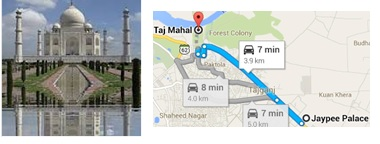
Fatehpur Sikri · Hawa Mahal · Jaipur
Fatehpur Sikri — Ciudad imperial del siglo XVI
Ciudad erigida por el emperador mogol Akbar entre 1571 y 1585, en el distrito de Agra, estado de Uttar Pradesh. Arquitectura bellísima. Acceso: bajar en el parking, atravesar la zona comercial, coger el bus interno al complejo (5 rupias ida). No perderse la Tumba de Salim Chishti (a 100 m de la salida del complejo): exquisita arquitectura Mughal del s. XVI, entrada gratuita, descalzarse y dejar propina al cuidador.
Hawa Mahal — Palacio de los Vientos
Construido en 1799 por el marahá Sawai Pratap Singh. Formaba parte del Palacio de la Ciudad y servía de extensión del harén: las mujeres reales podían observar la vida cotidiana de las calles sin ser vistas. El máximo exponente de la arquitectura Rajput, con matices mongoles. Fachada con 953 pequeñas ventanas (como un panal de abejas). 5 pisos de forma piramidal, acceso solo mediante rampas (sin escaleras). Construido en arenisca roja y rosa con incrustaciones de óxido de calcio. Su diseñador, Lal Chand Usta, le dio la forma de la corona del dios Krishna. Aunque solo se conserva la fachada, es el símbolo de Jaipur.
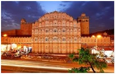
Royal Orchid Jaipur
Jaipur · Salir a pasear por los alrededores del hotel (zona muy céntrica)
Amber Fort · Palacio del Maharajá · Jantar Mantar
Amber Fort — Subida en elefante
Uno de los lugares más turísticos de toda la India. Construido sobre un antiguo fuerte del s. XI, es uno de los mejores ejemplos de arquitectura del Rajasthan. La subida en elefante por el estrecho camino adoquinado es movidita: el camino es empinado e irregular y los paquidermos van chocando entre ellos. Destacan: la Ganesh Pol (puerta de tres alturas que separa el patio de las estancias privadas), las puertas de plata, los salones con ventanas de celosía y el precioso palacio Sheesh Mahal. El lugar es imponente por su tamaño, el grosor de sus murallas y la belleza de su ornamentación.
Palacio del Maharajá — City Palace
Complejo enorme con varios edificios, jardines, patios y murallas; una parte es la residencia actual del Maharajá (no visitable). Fusión de arquitectura Rajhastan con influencia mogola. Muy colorido, destacando el rosado y el marfil. En su interior: museo dedicado a los Maharajas de Jaipur con la imagen de Sawai Masho Singh I (2 m de alto, 1,2 m de ancho, 250 kg, 108 esposas). También el arsenal (dagas, espadas, espejos y techos con incrustaciones de oro) y las salas de audiencias. Fijarse en las puertas del patio con bajorrelieves de pavos reales.
Jantar Mantar — Observatorio astronómico
Compuesto por 16 aparejos astronómicos que todavía se utilizan para predecir temperaturas de verano, intensidad de monzones y catástrofes naturales. En la India la astronomía tiene una importancia capital: un astrónomo puede determinar si una pareja es compatible para casarse según las cartas astrales. Merece la pena llevarse alguna foto de recuerdo.
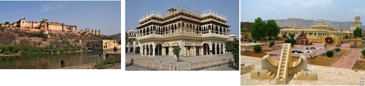
Royal Orchid Jaipur
Jaipur
Samode Palace · Nueva Delhi — Traslado al aeropuerto
Samode Palace
Alto en el camino para contemplar el majestuoso Samode Palace, un hotel que antiguamente era un palacio muy opulento. Almuerzo en Samode.
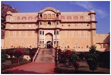
Nueva Delhi → Viena → Barcelona
Vuelo VIE → BCN: Austrian Airlines · Salida 07:00h · Llegada 09:15h
🇮🇳 Fin del viaje